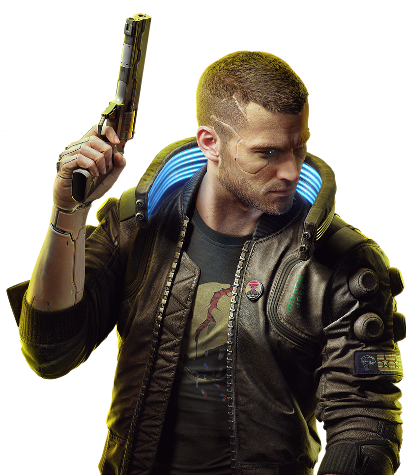
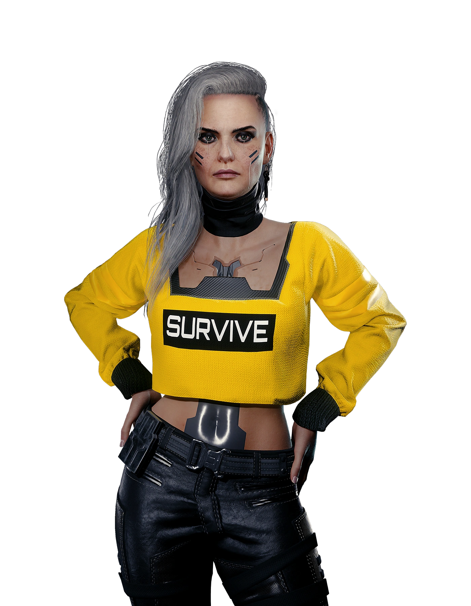

Start
Start
V

Johnny Silverhand

Il semble que devenir une légende du rock sans les excès habituels - sexe, drogues, dépression, problèmes juridiques et relations toxiques - soit possible. Johnny Silverhand l'a fait à sa manière classique. En tant que leader de Samurai, il était un visionnaire charismatique, un rebelle avec une cause authentique, et un ennemi farouche des corporations, en particulier Arasaka. Il a créé des succès emblématiques comme "Chippin' In" et "Never Fade Away". Bien qu'il soit décédé lors de l'attaque de la tour Arasaka, son esprit rebelle continue de vivre à travers la biopuce Relic, actuellement hébergée dans le cerveau de V. Cependant, pour Johnny, qui est un narcissique égocentrique, cette situation est un véritable enfer, bien loin de l'agréable alternative qu'est la prison du cyberespace.
Jackie Welles
Fils d'Heywood et fier de l'être, Jackie est également le fils de Mama Welles, ce dont il est encore plus fier. Il est têtu, et quand il veut quelque chose, il n'arrête pas (et n'arrête pas d'en parler) tant qu'il ne l'a pas. Jackie a toujours voulu beaucoup de choses, peut-être un peu trop. À l'adolescence, il a rejoint le gang des Valentinos, pour finalement les quitter en prenant conscience de son véritable potentiel. Pendant des années, il s'est démené dans le monde impitoyable des mercs; forcément, quand on veut s'asseoir à la table des grands, il faut commencer par être pris au sérieux. Dans la vie, Jackie a toujours eu pour but de devenir une légende à l'Afterlife et de ramasser un paquet d'eddies au passage.
Judy Alvarez

L'une des éditrices de danse sensorielle les plus talentueuses du marché, doublée d'une techie compétente. Si elle le voulait, elle pourrait se faire embaucher par n'importe quel studio corpo de divertissement et se remplir les poches, mais Judy tient trop à son indépendance pour ça, et rejette toutes les offres qu'elle reçoit. Son esprit anarchiste l'a conduite vers les Mox, dans l'espoir qu'ils pourraient aider à améliorer la vie des citoyens de Night City. Son plus gros point faible, qui lui cause toujours des problèmes, est son incapacité à se taire face à l'injustice. Pour certains, c'est aussi sa plus grande vertu.
Viktor Vektor

Quand on veut du chrome de qualité, on va chez Vik. Les concurrents ont peut-être un intérieur tenant autant du vaisseau spatial que de la chambre zen, mais sa clinique de charcudoc va à l'essentiel et ne bombarde pas les clients de logos corpos. Si le client est sympa, il peut même lui offrir une bière avec son anesthésie avant de commencer à le charcuter. Viktor Vektor est en fait une légende vivante de Night City, ce qu'il s'efforce de faire oublier aux gens depuis des années. C'est un homme de principes, un vieux dur à cuire de la rue qui s'est forgé un honneur et une morale au club de boxe des Night City Devils.
Panam Palmer
Panam est une nomade, même s'il serait plus juste aujourd'hui de dire « ex-nomade ». Suite à un désaccord avec Saul, le chef de la famille, elle a quitté la nation Aldecaldos pour aller tenter sa chance comme merc à Night City. Elle se trouve à un carrefour de son existence: d'un côté, elle sait qu'elle doit changer de vie, maintenant ou jamais; de l'autre, couper les ponts avec la famille nomade et tous ses amis lui semble un peu excessif. En plus de ça, Night City n'est pas tendre avec les nomades et laisse rarement le temps de s'adapter aux gens comme Panam, en proie à un conflit interne et rêvant d'un avenir meilleur.
Kerry Eurodyne
Musicien terriblement doué, rebelle incorrigible, célébrité, rockerboy de Night City... De nombreux qualificatifs sont utilisés pour désigner Kerry, mais ce qui est certain, c'est qu'il est le Dieu du Rock en Amérique. Dans le temps, il jouait de la guitare aux côtés de Johnny Silverhand dans le groupe culte Samurai. Lorsque leurs chemins se sont séparés, Eurodyne s'est lancé dans une carrière solo qui, bien qu'ayant connu des hauts et des bas, se porte encore très bien. Kerry est fier de ses racines philippines, même si, pour une star de son niveau, il est particulièrement discret sur sa vie privée. Malgré tous ses défauts, Night City est sa plus fidèle muse.
River Ward
River Ward pensait qu'une fois devenu inspecteur du NCPD, la vie ne pourrait être que plus simple. Malheureusement pour lui, à Night City, faire ce qui est bien est plus difficile que d'obtenir un simple grade. Chaque jour, il est en proie à une lutte morale: soit il joue le jeu, soit il abandonne une part de son âme. S'il s'autorisait à baisser sa garde ne serait-ce qu'une seule seconde, n'importe quel criminel pourrait en profiter. Malgré cela, River se lève chaque matin pour aller travailler en affichant une attitude positive. Peut-être que c'est sa façon à lui de supporter tout ça. Ou peut-être qu'il ne sait tout simplement pas quoi faire d'autre.
Goro Takemura
Garde du corps unique de Saburo Arasaka, il a vraiment, vraiment merdé. Tout en obéissant aux ordres, il n'a pu empêcher la mort de son maître, assassiné par son propre fils Yorinobu. Après le vol de la Relique, Takemura a suivi la trace des voleurs et s'est retrouvé dans une décharge, où il a tué Dexter DeShawn et sauvé V, unique témoin du crime commis par Yorinobu. Dans sa quête de vérité, Takemura est devenu le fugitif le plus recherché par Arasaka, traqué par tous les agents de la corpo à Night City. L'ancien garde du corps est guidé par un désir de vengeance qui restera inassouvi tant que le meurtrier de Saburo n'aura pas été remis à la justice. Même si cela signifie qu'il doit travailler avec des petites frappes comme V.
Alt Cunningham
Alt Cunningham. La meilleure netrunner de Night City, la plus puissante « entité » que l'on puisse trouver des deux côtés du Mur noir, et la seule personne capable de remettre Johnny Silverhand à sa place. C'est elle qui a créé le Tueur d'âmes. Lorsqu'il fut volé par Arasaka à des fins sinistres, Alt n'eut d'autre choix que de fuir dans le cyberespace. Ses années d'existence au-delà du Mur noir ont tant altéré sa conscience qu'elle tient désormais davantage de l'I.A. rebelle que de l'être humain. Son lien avec Johnny est le seul élément qui la relie encore à sa vie passée. Et c'est précisément ce lien que les Voodoo Boys ont décidé d'exploiter pour attirer Alt depuis l'autre côté du Mur noir.
Delamain
Si jamais vous avez envie de laisser vos problèmes derrière vous, montez dans un taxi de luxe Delamain.
Delamain est le seul service de taxi à Night City géré par une intelligence artificielle, dont les
priorités sont la sécurité des passagers autant que leur confort. La personnalité particulière de
Delamain justifie à elle seule de voyager dans les véhicules de la compagnie. C'est aussi un excellent
partenaire commercial, car il s'attache à améliorer sans cesse la qualité de ses services grâce à une
gestion efficace et des technologies novatrices.
(Sponsorisé par Delamain Corp.)
Rogue
Dans sa jeunesse, Rogue était une merc professionnelle. Aujourd'hui, elle est la reine des fixers. L'une des dernières légendes vivantes de Night City. Contrairement à ses amis du bon vieux temps (AKA Johnny Silverhand), Rogue ne se contente pas de se la couler douce: elle gère l'Afterlife, et donc la quasi-totalité du réseau de mercs de Night City. Toute mission sérieuse doit d'abord obtenir son feu vert, et la mission de V, la traque d'Anders Hellman, est très, très sérieuse.